"Day of Percussion 2000" - Manchester
"The highlight of the day is the return of Europe's Latin master Birger Sulsbrück. Never before has the philosophy of Cuban music been summed up so succincly or hilariously as here. He has the packed house clapping clave, dancing salsa and singing Spanish verse, learning by doing and experiencing rather than by locking oneself away in a practice room with drum-minus-one tapes and the ubiquitous Afro-Cuban instruction book. Sulsbrück conveys so convincingly the primal relationships between life and music, the sexual innuendoes and the passion that makes salsa so intoxicating. It's quite fitting, then, that the evening belongs to this superb musician, his congas, his percussion ensemble of RNCM students and the Royal Northern Big Band, driving out Tito Puente arrangements that bring on cheers of delight from the packed audience."
RHYTHM, Jim Bernardin. May, 2000
"World to World Percussion Festival" - Lund, Sweden
"The Danish Birger Sulsbrück is a Latin specialist and musical comedian. All of his odd sounds and effects put him in a class with Viktor Borge."
SYDSVENSKA DAGBLADET, Alexander Agrell, 1986
"Concert with Dave Hassell and Apitos latin jazz band"
… "energised by the dynamic and varied playing of guest conga master Birger Sulsbrück, a Danish spitfire of a musician who, despite his Scandinavian provenance, has become a world leader in the latin idiom."
MANCHESTER EVENING NEWS, Chris Lee. January 25, 1993
"Voss Jazz Festival 1982"
"Salsa came to Norway in the Voss Jazz Festival 1982 by a man with the name Birger Sulsbrück, who was the leader of the whole affair. The result and the responce was overwhelming both on stage and in the audince."
DAG og TID, Karl Seglem. Norway, March 10, 1983
"Trondheim Latin Festival" - januar 2002
… "Even more impressive Friday evening was the Trondheim Jazz Orchestra, led by Danish Birger Sulsbrücks who made the band swing intencely with an exciting salsa repertoire. After the projects with Chick Corea and Pat Metheny the Orchestra, for this occasion, showed an impressive versality with the three great singers in front."
Trondheim, Norway. Trygve Lundemo. 28.01.2002
"He made an eminent work in Venice and had everyone singing: "Vivere i ritmi" ("Long live the rhythm") and had a full house concert at Teatro Lux."
CITTA MUSICA – "LE Percussioni". Venice, Italy. 1982
Project-leader and co-producer of: The Danish Radio Big Band CD – "Cuban Flavour"
… "This project is very much caused by the work of Birger Sulsbrück, who in March 2004 collected seven famous Cuban guest musicians from groups such as Irakere and Habana Ensemble" … "A Masterpiece!"
DJEMBE, Peter Krog (from Danish language). April 2005
"Shed any attitude about latitude! Although the North Sea is a long way from the Caribbean, this outstanding conga instruction book/CD package from Denmark is very much in touch with the tropical pulse". "Sulsbrück's thorough instruction on conga strokes and technique is especially strong. The photos of ink-stained hands are a clever device for portraying the portions of the hands used in specific strokes. … Though the emphasis is on Cuban music, samba, jazz, salsa variations, fusion, and rock patterns are also offered. It's up-to-date, hip, and thick with info. How do you say "caliente" in Danish?"
MODERN DRUMMER MAGAZINE, Jeff Potter, USA, April 2000
"It's a book with an extraordinary importance. Here we find all the movements of the left and the right hand. Each movement that we see in the photos is a true movement and it indicates the real rhythms of the percussionists. Percussion with its various languages is something difficult to understand, but here you will. The truth opens its ways by itself, and there will be nobody to stop it. ¡AUCH!"
TATA GÜINES "El Tumbero Mayor", Havana, March 2001
"Hola Curly! oh man, I just got your book in the post, thank you so much, I am very happy to have it. I have looked it over and it looks great! Nice explanations pictures, etc. A very helpful book for students. Congratulations … I also love all the other side notes and historical things also. Nice listing for the names of the drums in different types of rhythms in different parts for the island. A job well done … I will pass the word around to my students also. I wish you all the best of luck my friend and i hope someday to be able to play together with you." Peace
LUIS CONTE, USA, June 6. 2009
"This book is the product of a high educational level, is recommendable for all percussionist. The book will help you to acquire knowledge from the authentic roots of the Cuban percussion and shows its application on every Latin rhythmic section. Birger is an untiring researcher and has great knowledge of percussion instruments. A deep knowledge shows through his books which are capable of attracting the people who are really interested in Latin music."
LUIS ABREU member of "Los Papines", Havana, July 2002
"Birger Sulsbrück's "Congas • Tumbadoras, Your Basic Conga Repertoire" should be required reading for percussionists around the world. It is written with a professionalism that makes us proud to have a great friend who can show, wherever Cuban music is loved, how to play and carry on the tradition of "la conga"."
Giraldo Piloto. Drummer and bandleader of Klimax, Cuba. October, 2002
"In short, this is a really admirable work that is so well conceived and produced that I am very frustrated that it wasn't around years ago. If you use congas in your ensemble, it would make all the sense in the world to own this highly enlightening and richly helpful book. Very impressive!"
JAZZ EDUCATORS JOURNAL, Dr. Lee Bash. USA, May 2000
"Birger Sulsbrück has been coming to Cuba for many years now. He has learned much about Cuban music from our great Masters, and has picked up an enormous amount of information on Cuban percussion rhythms and musical instruments. All this information is combined with great skills as teacher and all that put together has made possible a most instructive and beautiful book "Congas • Tumbadoras". A very practical method for learning to play congas is put forth by Sulsbrück, in a easy understandable system. I am sure it wasn't so easy for him to learn from our teachers. Perhaps that is the clue to the success of his book. A perfect bridge between the authentic Cuban traditions and persons who, not having the time he used for research in Cuba, now want to explore them deeply to be able to use knowledge accumulated during hundreds of years in this very musical Island".
Dr. Prof. Olavo Alén Rodriguez, Center for Investigation and Development of Cuban Music. (CIDMUC), Havana. July 2002
"To Birger -
The talent of his knowledge has made him write a wonderful book.
Your boy"
TITO PUENTE "84"
"What could a Danish percussionist named Birger Sulsbrück possibly offer us on the subject of Latin American instruments of Cuba and Brasil? Well the answer is: plenty!" "The beauty of this book lies in the answers." "This package is worth every cent. From Denmark to Latin America, Birger Sulsbrück has truly bridged the ocean with this one."
MODERN DRUMMER MAGAZINE, Mark Hurley. USA, July, 1984
"It is the best book I have seen on this subject."
JOHN BECK, Professor of Percussion, Eastman School of Music, USA, January 1987
"He certainly knows how to present a clear and lucid guide through the often confusing rhythmic structures and terminology encountered." … "In conjunction with the recorded examples on the cassettes, the ominously complex sounding rhythms are broken down to the point where you actually find yourself thinking there's nothing to it. Of course there is, but at least, you've been drawn into the taking them on." … "This book provides the map."
RHYTHM MAGAZINE, Nigel Lord, London, January 1987
"It is super-professional all the way. It is excelent and should be part of every drummers libary. I recommend it 100%, in fact, I'll do a little study work on it myself."
LOUIE BELLSON, USA, New York, 1986
"This publication should be owned by all percussionists – both novice and experienced players – having an interest in teaching or playing Latin percussion instruments." "The result of all his work on this object is an invaluable contribution on the rhythms." "The 183 pages of text are clear and concise - indeed, the explanations of the rhythms and instruments are superb."
PERCUSSIVE NOTES (P.A.S.) Ron Fink. USA, July 1986
"Dear friend Birger Sulsbrück. Reading your wonderful book about the Latin American Percussion, I think that it is very interesting for all the people that want to know about the Latin rhythms. All the players in my country liked very much in the progressive way that you made the method. Sincerely yours"
GUILLERMO BARRETO, La Habana, 1983
"Birger Sulsbrück is a master percussionist and a great instructor. The book Latin American Percussion … is without a doubt the most thorough and clearly book and tape combination on this subject available."
ED THIGPEN, Copenhagen 1983
"To Birger - A pleasure being associated with you, thanks for a great book. Your friend"
JOHNNY RODRIGUEZ, New York, 1984
"With the patience and perfection of an artist, Birger Sulsbrück has stripped down the beats of the various rhythms and translated them into notes in order to explain the language of Cuban rhythms."
CAIMAN BARBUDO, Bernardo Marques Ravelo, Cuba, November 1982
"And it is here where we get to appreciate all of the instruments and techniques previously discussed, in an absorbing musical segment performed by some skilled Latin players." … "Plus an opportunity to hear what it's all supposed to sound like when it's done right, Latin American Percussion will offer you exactly that."
MODERN DRUMMER MAGAZINE, Mark Hurley, January 1989
"One of the best explanations of clave I have seen was given by Birger Sulsbrück in his instructional video Latin-American Percussion. Here you have a Danish man explaning an Afro-Cuban musical principle to you in English. It is an amusing juxtaposition, but more importantly, it works."
DESCARGA.com, Review by David Peñalosa. January 1994
"[About clave] - is certainly the clearest and most concise demonstration I've seen. … A friend of mine who has been keen to learn Latin-American percussion for some time seemed entranced by the proceedings. At the end of each section, he murmured "It's very clear, isn't it? … You can't go wrong with Birger."
RHYTHM, Tim Ponting. UK, 1988
"Musical, instructive and groovy!"
STICKS, Tom Schäfer, Germany, November 2004
"An amazing book from a percussion legend! Good luck finding a copy..."
Amazon reader review of LATIN-AMERICAN PERCUSSION, United Kingdom, April 2023
The 1986 textbook is still in demand — see the Download page for the free 2014 audio recordings.Lærebogen fra 1986 er stadig efterspurgt — se Download-siden for de gratis lydindspilninger fra 2014.
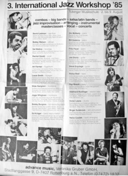
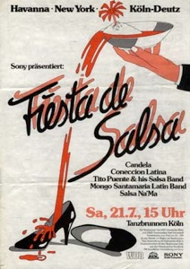
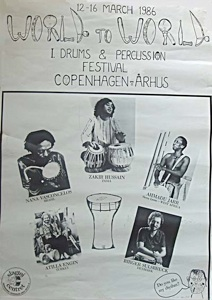
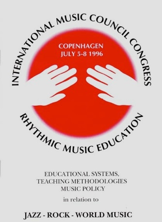
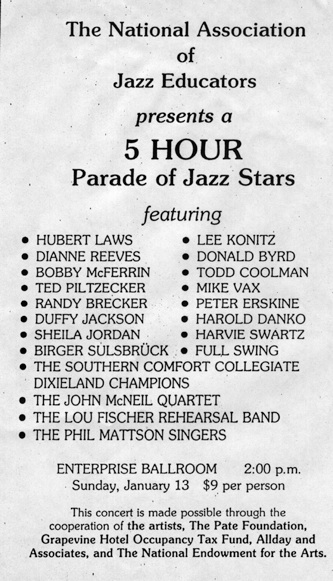
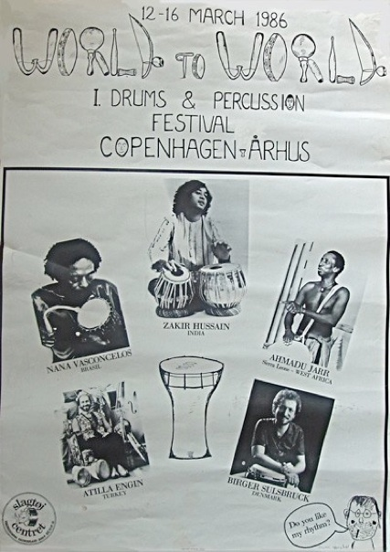
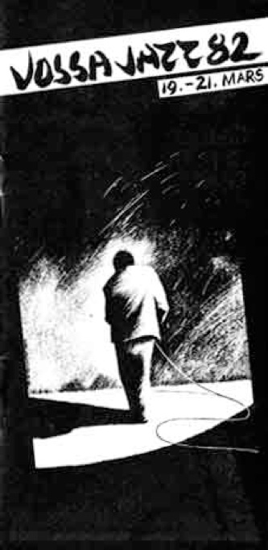
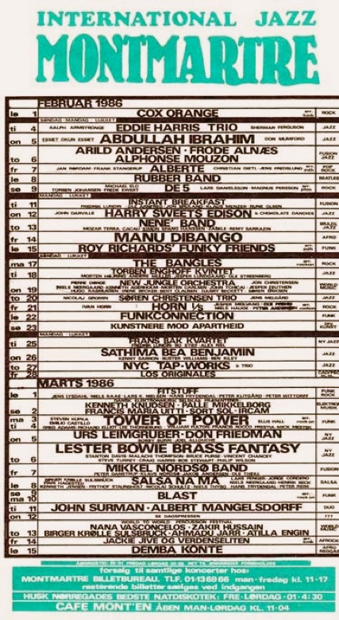
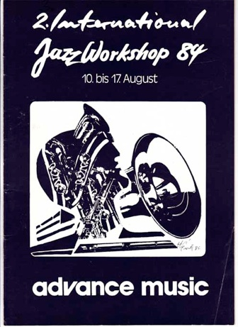
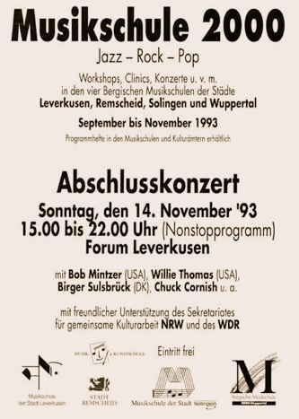
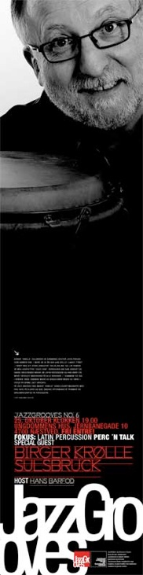
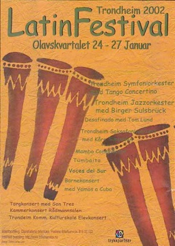
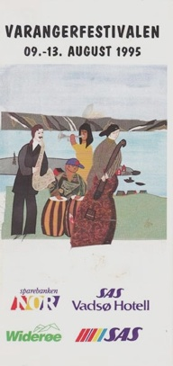
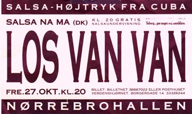
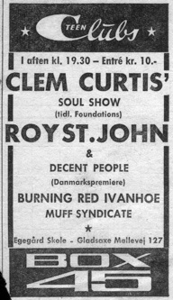
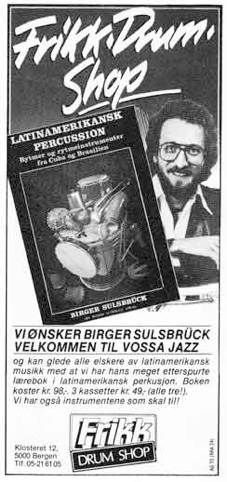
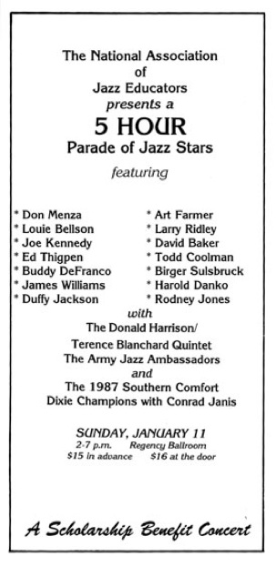